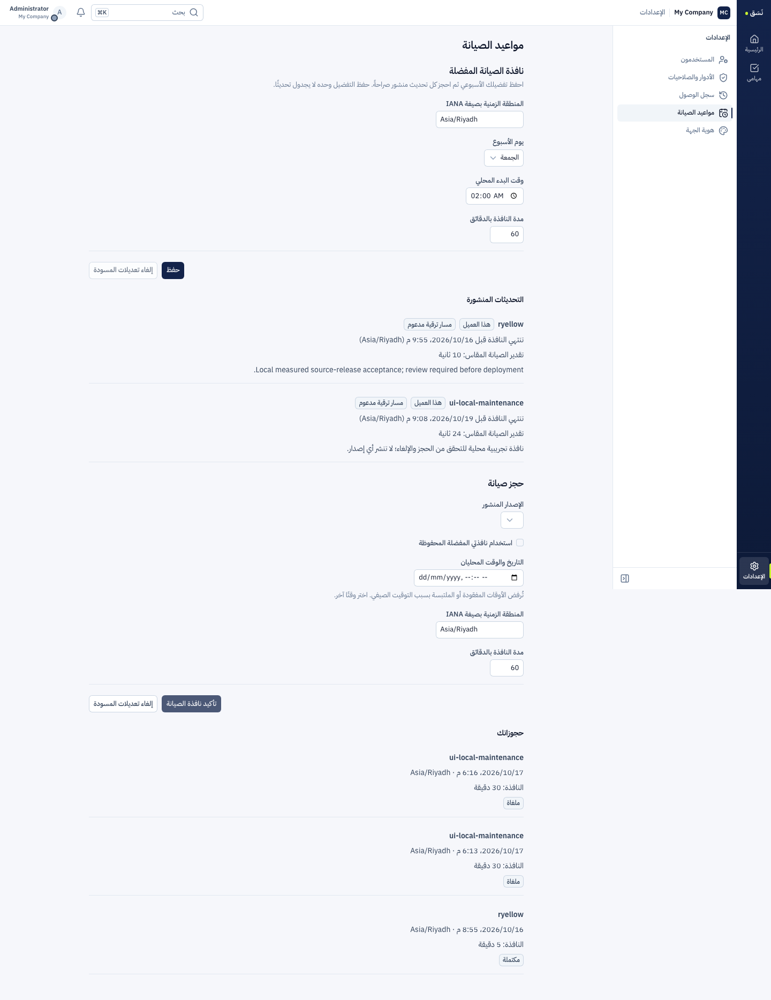
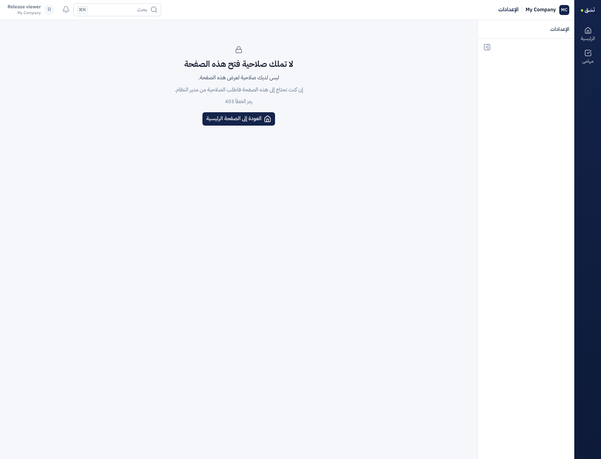

تنفيذ واختبار محليان — بانتظار مراجعتك
تحديث النظام والإضافات وجدولة الصيانة
16 أكتوبر 2026 · المنطقة الزمنية: الرياض. الحزمة في فرع معزول، دون commit أو دمج أو push أو نشر. تستهدف استمرار الخدمة للتغييرات المثبت توافقها، وحصر صيانة ترقية قاعدة البيانات في العميل المستهدف.
10قواعد عملاء فعلية مستقلة في المختبر
322كتابة مؤكدة أُعيد التحقق منها
9 / 9بقية العملاء استمروا خلال ترقية العميل الأول
متى تستمر الخدمة ومتى تتوقف؟
كود أو واجهة متوافقانتجهيز مجموعة جديدة وفحصها
↓
تحويل المسار وتصريف الطلبات القديمة مع الاحتفاظ بالأصول
يستهدف استمرار القراءة والحفظ والجلسة
ترقية قاعدة Odoo أو إضافة تحتاج ترحيلًاالعميل يحجز نافذة مسموحة
↓
حاجز العميل ← تصريف وفصل القديم ← نسخة DB والملفات ← ترقية وفحص ← فتح الجديد
صيانة لهذا العميل؛ الآخرون يعملون
تغيير غير متوافق في حالة الذكاء المشتركةحاجز AI على نطاق الحالة المتأثرة
↓
تصريف الأجيال ← ترحيل معتمد ← فحص الحالة ← استئناف الذكاء
صيانة AI؛ أعمال النظام الأخرى تستمر
رُصد نحو23.57 ثانية من استجابات الصيانة في تجربة ترقية عميل واحد. هو حد أدنى ضمن أخذ العينات المحلية، وليس مدة مضمونة أو SLA. لا تُوصف ترقية قاعدة كاسرة بأنها بلا توقف قبل إثبات استمرار القراءة والحفظ خلالها.
ما الذي نُفّذ؟
- عقد إصدار مثبت، تصنيف محافظ، حساب تبعيات الإضافات المثبتة، مجموعات تشغيل مستقلة، تثبيت وجهة الطلب والجلسة والأصول القديمة.
- محرك دائم مع CAS وإيصالات، حاجز خاص بالعميل، منع اتصال الجيل القديم، نسخة متسقة للقاعدة والملفات، ترقية وفحص قبل فتح الخدمة. الفشل يبقى صريحًا ولا يعيد الترحيل تلقائيًا.
- إعدادات صيانة لكل عميل: منطقة IANA وتفضيل أسبوعي وحجز إصدار محدد وتعديل وإلغاء وصلاحيات. التفضيل وحده لا ينفذ تحديثًا. المجدول يستعمل المحرك نفسه ويتحقق من السعة والنافذة والسياسة عند التنفيذ.
- استمرار AI عبر runs وclaims وcheckpoints، هوية فعلية للحالة، وتصريف دائم يظل نافذًا بعد إعادة تشغيل الجيل القديم. هذه اختبارات لاستمرار التنفيذ وسلامته؛ لا تقيس جودة إجابات مزود مدفوع.
- مسار مخصص يعمل محليًا دون اعتماد تشغيلي على خدمة التحكم، وقوالب الحارس والصور والحافة والأوامر ودليل المشغّل.
النتائج المتحققة
| الفحص | النتيجة |
|---|
| محرك التحديث | 181 اختبارًا ناجحًا، تشمل الرفض الآمن وإعادة المحاولة والمصالحة والنسخ والاستعادة والجدولة. |
| الفحوص العامة | npm test نجح:802 اختبار Python و3427 اختبار JavaScript؛ فحص أنواع الواجهة وخدمة التحكم نجح. |
| Odoo الفعلي | 1070 اختبار post-install على قاعدة scratch جديدة:0 فشل و0 أخطاء؛ فحوص عربية/إنجليزية وصلاحيات وتزامن. |
| الذكاء | 231 اختبارًا ناجحًا، و15 اختبار PostgreSQL حيًا نجحت منفصلة، تشمل عمليتي HTTP وإعادة تشغيل جيل مصروف ورفض حالة أخرى قبل الترحيل. |
| الحارس | 22 اختبار HTTP فعليًا للمسارين المشترك والمخصص والأصول والهوية؛ حارس Docker محلي نجح أيضًا. |
| عشرة عملاء | 740 عينة،322 كتابة مؤكدة تحققت القراءة منها،0 فشل غير متوقع، وبقية العملاء التسعة استمروا أثناء ترقية العميل المستهدف. |
| الجدولة والفشل | موعدان مستقلان تحققا بالمحرك نفسه؛ إعادة تشغيل المجدول لم تكرر التنفيذ. فشل تجريبي أبقى الهدف في الصيانة، واستعادة في قاعدة جديدة تحققت بياناتها ومرفقها. |
| الجاهزية الفعلية | ترقية مستقلة لاحقة تحققت فيها الجلسة والمرفق عبر HTTP والقرص وأصول JavaScript وقاموسا العربية والإنجليزية قبل فتح العميل. |
| Docker وcron | صورة قبول بقاعدة مخبأة ومصدر حالي: HTTP بدورين، جلسة ومرفق، منع اتصال القديم، وعامل cron واحد يتصل بقاعدة العميل بعد الفصل. |
| المتصفح | نجح حفظ التفضيل والحجز والإلغاء بالعربية وRTL دون أخطاء متصفح؛ المستخدم غير المخول تلقى403 دون عرض النموذج. |
لا تُجمع الأعداد بوصفها اختبارات فريدة؛ بعض الحزم تتداخل. تجربة المتصفح استخدمت واجهة Nuxt مبنية وAPI/Odoo وحارسًا فعليين مع proxy محلي ثابت للـHost، ولا تثبت حافة الإنتاج. فهرس الأدلة وبصماتها مرتبط أدناه.
واجهة العميل التي اختُبرت
المواعيد الظاهرة بيانات تجربة فقط.
عرض واجهة الصيانة

عرض رفض الصلاحية

ما بقي قبل الإطلاق
- بناء صورة Odoo الكاملة من الصفر تعثّر في تنزيل حزم Debian بسبب الشبكة بعد محاولة محدودة. نجحت صورة قبول Docker بقاعدة مخبأة ومصدر الإضافات والمشغّل الحالي. لا يثبت ذلك سلسلة بناء المنتج كاملة أو تنفيذ وظيفة أعمال مجدولة بعينها. فحص طبقات صورة القبول يثبت أصل نظام الملفات؛ لا يثبت تطابق جميع إعدادات الصورة الأساسية.
- لم يُنفذ قبول إنتاج على Caddy/DNS أو التخزين أو HA أو ترقية رئيسية لـOdoo أو مزود ذكاء خارجي. التحويل online والتعطل والاستئناف لهما اختبارات مركزة؛ تجربة الحمل الكاملة الموثقة هنا تخص ترقية قاعدة عميل.
- main أُعيدت تسميته إلى WebVue أثناء العمل. بقيت هذه الحزمة معزولة على أساس Nasq السابق. نقل المراجع والأسماء ومراجعة التعارضات مع main الجديد وفحوص الدمج خطوة لاحقة تنتظر مراجعتك.
- اختبار الفشل ترك tenant_03 التجريبي عمدًا في الصيانة، والاستعادات في قواعد جديدة. لا استعادة تلقائية فوق قاعدة استأنفت الكتابة. لم تُختبر قاعدة odoo19.
- إعداد CI في الفرع قالب لم يُفعّل. لا GitHub Actions أو خادم CI أو Cloudflare أو نشر أو دمج ضمن هذه المهمة. قياس الاستهلاك الكلي غير مكتمل؛ لا ادعاء توفير.
ملفات المراجعة
الفرع: codex/deploy-continuous-updates
الأساس: dca71b8b45a15ee138bf1ae41d345fa099c105e0
الخطة وحالة التنفيذ · دليل المشغّل · فهرس الأدلة وبصماتها
الأدلة مرتبطة بجهاز المراجعة المحلي. التكوينات والجلسات الخاصة تبقى في مجلدات .superpowers ولا تُنشر. التقرير والصور لا تحتوي كلمات مرور أو جلسات.